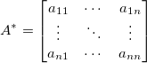
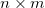
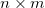

erfüllt die inverse Matrix
erfüllt die inverse Matrix  , die auch als reziproke Matrix bezeichnet wird, wird folgendes Verhältnis:
, die auch als reziproke Matrix bezeichnet wird, wird folgendes Verhältnis:Inhalt |
Die X-Funktion minverse erzeugt eine inverse Matrix, indem Sie die Adjunkte durch ihre Determinante teilt. Wenn Matrizen keine Inversen oder Determinanten haben, wird eine Moore-Penrose-Pseudoinverse berechnet.
Zugriff auf diese Funktion über die Bedienoberfläche:
| Neu berechnen |
Bedienelemente zur Neuberechnung der Analyseergebnisse
Weitere Informationen finden Sie unter Analyseergebnisse neu berechnen. |
|---|---|
| Eingabematrix |
Legen Sie die Eingabematrix fest. Hilfe zum Festlegen von Bereichen finden Sie hier: Eingabedaten festlegen |
| Ausgabematrix |
Legen Sie fest, wo die inverse Matrix ausgegeben wird. Hilfe zum Festlegen der Bereiche finden Sie unter: Ergebnisse ausgeben |
Für eine Quadrat- und Rangmatrix von erfüllt die inverse Matrix , die auch als reziproke Matrix bezeichnet wird, wird folgendes Verhältnis:

wobei  die Identitätsmatrix ist.
die Identitätsmatrix ist.
Die Berechnung von kann ausgedrückt werden mit:

wobei die Determinanten der Matrix meint, und  die Adjunkte ist von
die Adjunkte ist von

wobei  die Matrix ist, indem die Spalte und Zeile
die Matrix ist, indem die Spalte und Zeile  aus entfernt wird.
aus entfernt wird.
Wenn Matrizen keine Inversen oder Determinanten haben, wird eine Moore-Penrose-Pseudoinverse berechnet. Sie existiert für jede Matrix.
Bei einer gegebenen ") Matrix , ist die eindeutige  pseudoinverse Matrix. Wenn
Matrix , ist die eindeutige  pseudoinverse Matrix. Wenn  und A vollen Rang haben, dann erfüllt Folgendes:
und A vollen Rang haben, dann erfüllt Folgendes:
Die Berechnung basiert auf einer singulären Wertzerlegung (SVD) der Matrix . Jeder singuläre Wert innerhalb der Toleranz wird als Null behandelt. Wenn der Rang von nicht voll ist, schrumpft die Matrix zu einer kleineren Matrix.